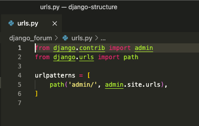
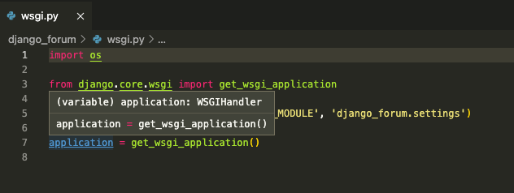
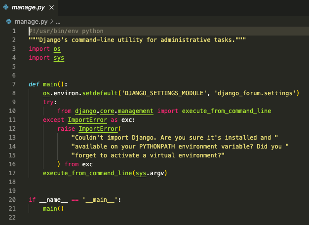
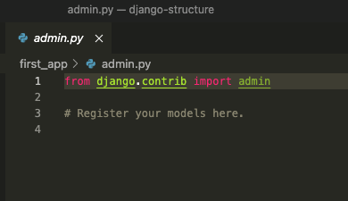
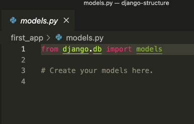
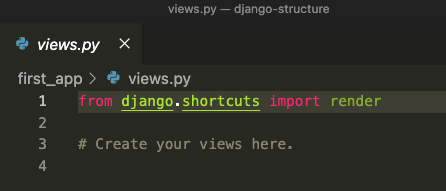

Django is a Python based Web Framework that allows to create Web Applications
The __init__.py file is usually
empty, but can be used to export selected portions of the package
under more convenient name, hold convenience functions, etc.
If you remove the __init__.py file, Python will no longer look for
submodules inside that directory, so attempts to import the module
will fail.
settings.py It contains the Django
project configuration.
Used for adding all the applications and middleware applications. This
is the main setting file of the Django project.
urls.py
URL is a universal resource locator, it contains all the endpoints
that we should have for the website. It is used to provide you the
address of the resources (images, webpages, websites, etc) that are
present out there on the internet.

wsgi.py
WSGI stands for Web Server Gateway Interface, it describes the way how
servers interact with the applications.

manage.py is automatically created
in each Django project. manage.py is a thin wrapper around
django-admin.py that takes care of two things for you before
delegating to django-admin.py: It puts your project’s package on
sys.path. It sets the DJANGO_SETTINGS_MODULE environment
variable so that it points to your project’s
settings.py file.

admin.py file is used for
registering the Django models into the Django administration. It is
used to display the Django model in the Django admin panel. It
performs three major tasks:
→ Registering models
→ Creating super user
→ Logging and using web application

apps.py is a file that is used to
help the user include the application configuration for their app.
Users can configure the attributes of their application using the
apps.py file.

models.py represents the model of
the web applications in the form of classess. It contains the
essential fields and behaviour of the data that the app is storing.
→ Each model is a Python class that subclasses
django.db.models.Model.
→ Each attribute of the model represents a database field.
views.py provide an interface
through which a user interacts with a Django web application. It
consists of Python functions or classes that receive a web request and
return a web response. The response can be a simple HTTP response, an
HTML template response, or an HTTP redirect response that redirects a
user to another page.

urls.py is same as that of in
Project file structure. It is used for linking the user’s URL request
to the corresponding pages it is pointing to. The user should create
the file after creating each application.
tests.py allows the user to write
test code for their web applications. It is used to test the working
of the app.
→ Djanog is based on MVT architecture (Model View Tempalte).
→ It is a software developing design pattern for developing a web application
Models: The model is going to act as the interface of your data. It is responsible for maintaining data. It is the logical data structure behind the entire application and is represented by a database (generally relational databases such as MySql, Postgres)
Views: View: The View is the user interface — what you see in your browser when you render a website.
Templates: Template: A template consists of static parts of the desired HTML output as well as some special syntax describing how dynamic content will be inserted.